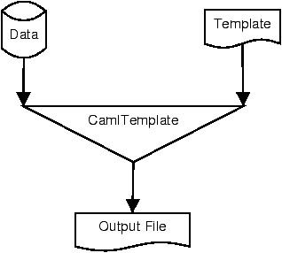

The CamlTemplate Manual
Version 1.0.1
Benjamin Geer
7 July 2005 |
1 Introduction
This manual describes how to use CamlTemplate, a template processor for
Objective Caml programs. It can be used to generate web pages,
scripts, SQL queries, XML documents and other sorts of text.
1.1 About This Manual
This manual is provided in HTML and PDF formats in the CamlTemplate
distribution.
1.2 Licence
CamlTemplate is free software, released under the
GNU General Public License. This manual is released under the same
licence.
In addition, as a special exception, Benjamin Geer gives permission to link the code of
this program with the Apache HTTP Server (or with modified versions of Apache that use the
same license as Apache), and distribute linked combinations including the two. You must
obey the GNU General Public License in all respects for all of the code used other than
Apache. If you modify this file, you may extend this exception to your version of the
file, but you are not obligated to do so. If you do not wish to do so, delete this
exception statement from your version.
1.3 Features
-
A versatile, easy-to-learn template syntax that supports common scripting-language
constructs, while encouraging a separation between presentation logic and application
logic.
- The supported Caml data structures accomodate lists, tables and trees of items in a
straightforward manner.
- Works well with mod_caml and
mod_fastcgi.
- Supports any ASCII-compatible encoding, including UTF-8.
- Optional support for multithreading.
CamlTemplate works by merging data with handwritten templates. This process is
illustrated in Figure 1.
The template contains only the handwritten material; some other program provides the data.
The template's author doesn't need to be involved in writing that program; he or she only
needs to know what data the program provides, and can therefore change the template
without involving the program's developers. Likewise, the program can be modified so that
it obtains data in a different way, without affecting the template. Different templates
can be used to display the same data in different ways (e.g. to generate normal and
`printer-friendly' versions of a web page).

Figure 1: Generating a document
1.4 Getting CamlTemplate
The CamlTemplate source code and documentation can be downloaded from the
CamlTemplate web site.
1.5 Installing CamlTemplate
1.5.1 Installing with GODI
If you use GODI, you can install CamlTemplate from godi_console. Otherwise, you can install manually as described below.
1.5.2 Installing Manually
Requirements:
Unpack the archive:
tar zxf camltemplate-x.y.z.tar.gz
cd camltemplate-x.y.z
To see the configuration options, type:
./configure --help
Type the following, adding any options you need:
./configure
Then type:
make
make opt
make test
If there are no errors, type make install as root. This installs bytecode and
native-code versions of the library using ocamlfind. Documentation in HTML and PDF
formats is installed in $PREFIX/doc/camltemplate. Several sample programs can be
found in $PREFIX/share/camltemplate.
To uninstall the library, type make uninstall as root.
1.5.3 Integration with mod_caml
Mod_caml is an Apache module that dynamically loads OCaml bytecode to handle HTTP
requests.
CamlTemplate has been tested with mod_caml 1.3.6 and Apache 1.3. (We haven't tested it
with Apache 2.0, because a bug in Apache 2.0 has prevented
mod_caml from working at all; this looks as if it will be fixed in Apache 2.2. If you
need to use Apache 2.0, try the instructions on the mod_caml web site, and let us know if
it works.)
1. Install mod_caml, and make sure it works on its own before proceeding (try the hello.ml example that comes with it).
2. In your httpd.conf, after the configuration you added for mod_caml, add the
following line:
CamlLoad /path/to/camltemplate/camltemplate.cma
(If you don't know where it is, type ocamlfind query camltemplate at a shell
prompt.)
3. Restart Apache.
4. Try compiling and installing the example in examples/mod_caml (see the README there).
1.5.4 Integration with mod_fastcgi
Mod_fastcgi is an Apache module that allows the web server to hand off HTTP requests to
a pool of long-running programs; these can be OCaml programs compiled to bytecode or
native code.
This has been tested using Christophe Troestler's OCaml-CGI
package and mod_fastcgi 2.4.2, and works with Apache versions 1.3 and 2.0. For an
example, see examples/fastcgi. You'll need to use CamlTemplate's optional thread
support (see Section 4.4 for instructions).
1.6 Mailing List and Support
The camltemplate mailing list is used for questions,
suggestions, bug reports and discussion about CamlTemplate.
There is also a Frequently Asked Questions page.
1.7 Author
CamlTemplate is developed and maintained by Benjamin Geer (benjamin DOT geer AT gmail
DOT com).
1.8 History
In 1999, Benjamin Geer wrote a template processor in Java, called
FreeMarker, based on the experience of using a similar tool
with graphic designers in a web development shop. CamlTemplate borrows some aspects of
FreeMarker (small library not tied to web development, JavaScript-like expressions,
Perl-like data structures), as well as some ideas from the Apache Jakarta project's
Velocity template processor (generated parser, more concise
syntax), released in 2001. The first version of CamlTemplate was released in October
2003.
2 Writing Templates
2.1 Inserting Values
Here is a simple example of a template for generating an HTML page:
<html>
<head>
<title>${title}</title>
</head>
<body>
<h1>${title}</h1>
Today's date: ${date}
</body>
</html>
This template expects two pieces of data: a title and a date. A dollar sign followed by
an expression in braces is called an expansion; it means, `insert the value of this
expression here'. If the value of title was Important Page, and the value of
date was 29 September 2003, the resulting document would look like this:
<html>
<head>
<title>Important Page</title>
</head>
<body>
<h1>Important Page</h1>
Today's date: 29 September 2003
</body>
</html>
A variable such as title or date is called a scalar variable, meaning
that it contains only one value.
If an expansion contains a value that has not been set, it produces no output. This makes
it convenient to write HTML form elements that display the value previously entered, if
any:
<input type="text" name="address" value="${address}"/>
2.2 Hashes
It is often convenient to group several related values together, and give a name to the
group. A hash is a collection of values, each of which has a name (called a `key').
Continuing with the example from the previous section, we might want to break down the
date into day, month and year components:
Today's date: ${date.day}-${date.month}-${date.year}
Here, date is a hash, which contains three scalars: day, month and year. (An expression like date.day is called a hash lookup.) The result
might be:
Today's date: 29-09-2003
Hashes can contain hashes, e.g.:
Date of birth:
${user.dob.day}-${user.dob.month}-${user.dob.year}
The string value of any variable (or other expression) can be used as a hash key by
enclosing the expression in square brackets:
Error in field "${fieldName}": ${errors[fieldName]}
If the value of fieldName was always "title", the above would be the same as
writing:
Error in field "title": ${errors.title}
Generated documents often contain lists of data. In a template, the #foreach
statement processes all the elements in a list. Here's a simple example:
<p>Signatories:</p>
<ul>
#foreach (signatory in signatories)
<li>${signatory}</li>
#end
</ul>
The output might look like this:
<p>Signatories:</p>
<ul>
<li>Arthur Artichoke</li>
<li>Bernard Banana</li>
<li>Carol Carrot</li>
<li>Dorothy Date</li>
</ul>
For each element in the list, the #foreach statement stores the element's value
temporarily in the name given before the in, then processes the template text
between the #foreach and the #end.
Here's an example that generates an HTML table:
<table>
<thead>
<tr>
<th>Name</th>
<th>Date of Birth</th>
<th>Favourite Colour</th>
</tr>
</thead>
<tbody>
#foreach (person in garden.people)
<tr>
<td>${person.name}</td>
<td>${person.bdate}</td>
<td>${person.colour}</td>
</tr>
#end
</tbody>
</table>
Here garden is a hash that contains a list called people. Each element of
people is a hash containing three scalars (name, bdate and colour).
2.4 Conditionals
A template can contain optional text, which is used only if some condition is met. The
#if statement tests a condition. For example:
#if (approved)
This document has been approved for publication.
#else
This document is awaiting approval.
#end
We have seen scalars that contain strings (i.e. text); true and false are also
possible values of a scalar (e.g. approved above). Any scalar is equal to true
if it has a value other than 0 or the empty string. A list is equal to true if it
exists and isn't empty. A hash is equal to true if it exists. This makes it
convenient to check, for example, whether a list contains any values before processing its
contents:
#if (searchResults)
#foreach (result in searchResults)
...
#end
#end
If a scalar contains a string or a number, an expression can test the scalar's value,
using comparison operators such as == (equals), != (is unequal to), <
(is less than) and > (is greater than). You can also use #elseif blocks to
test several conditions. For example:
#if (hour > 17)
Good evening!
#elseif (hour > 12)
Good afternoon!
#else
Good morning!
#end
#if (status == "approved")
This document has been approved for publication.
#else
This document is awaiting approval.
#end
See Section 3.6 for the full details of expressions.
2.5 Setting values
The #set statement assigns a value to a name. The value is not set in the data
model that the program has provided; a template cannot use #set to change its data
model. The value remains internal to the template, and only while the template is being
merged; it is then forgotten. Returning to the earlier example of an HTML table, suppose
we wanted the background colour of the rows to alternate between yellow and white. We
could write:
<tbody>
#set (background = "white")
#foreach (person in garden.people)
<tr bgcolor="${background}">
<td>${person.name}</td>
<td>${person.bdate}</td>
<td>${person.colour}</td>
</tr>
#if (background == "white")
#set (background = "yellow")
#else
#set (background = "white")
#end
#end
</tbody>
2.6 Including Templates in Templates
Rather than copy and paste the same text into several templates, you can put the common
text in a separate template, and include that template in other templates using the #include statement. For example, you might include a standard header and footer on
each page:
#include ("header.tmpl")
...
#include ("footer.tmpl")
Included templates will not see any values that have been set in the including template,
nor can the including template see any values that the included template sets. If you
want to pass values into a reusable section of template code, use a macro, as described in
the next section.
2.7 Macros
To create a reusable bit of template code that uses values you provide, you can write a macro. The #macro statement defines a macro, which can then be used as a
statement in its own right. For example, here is a macro that formats a date in a
particular way, given the year, month and day as numbers:
#macro formatDate(year, month, day)
#var (monthPrefix)
#var (dayPrefix)
#if (month < 10)
#set (monthPrefix = "0")
#end
#if (day < 10)
#set (dayPrefix = "0")
#end
${year}-${monthPrefix}${month}-${dayPrefix}${day}
#end
(The #var statement will be explained in a moment.)
Here is some template code that expects a hash called date like the one we saw in
Section 2.2, and uses it to call the formatDate macro above:
Today's date:
#formatDate(date.year, date.month, date.day)
A macro may be called with fewer arguments than it was defined with; the remaining
arguments are set to null. It is an error to call a macro with too many arguments.
2.7.1 Defining Variables in Macros
The #var statement in the macro above initialises a variable for use within the
macro, setting it to a null value. We could have written:
#set (monthPrefix = "")
But if there was already a variable called monthPrefix outside the macro, #set would change the value of the existing variable. (Sometimes this might be what you
want.) By contrast, a variable initialised inside a macro with #var only exists
within that macro, and doesn't affect any other variable that might have the same name
outside the macro; its value is forgotten once the macro has completed. Once you have
used #var to initialise a variable in a macro, you can use #set to change
its value, as in the example above. To initialise a variable with a value other than
null, you can write:
#var (colour = "blue")
When used outside of a macro, #var has the same effect as #set.
2.7.2 Storing Macros in Separate Templates
If there are some macros that you want to use in more than one template, you can define
them in a separate template, which we'll call a macro template. In each template
where you want to use those macros, you then need to tell CamlTemplate where to look for
them, using the #open statement. For example, if you've written a macro template
called macros.tmpl, and you want to use them in a template called test.tmpl,
you would put the following line in test.tmpl, before using any of the macros:
#open ("macros.tmpl")
You can put several #open statements in a template. When you call a macro,
CamlTemplate looks for it first in the template that's being merged, and then in any macro
templates that have been opened in that template.
2.8 Functions
A function can be supplied to a template as part of its data. Since functions are written
in Objective Caml, they can do things that would be cumbersome or impossible to do in
macros. A function takes one or more expressions as arguments, and returns a value, which
can be used in an expansion or in a statement.
For example, CamlTemplate provides a function called escHtml, for escaping special
characters in HTML documents. It can be used like this:
Company name: ${escHtml(companyName)}
If the value of companyName was Artichoke & Banana, the output would be:
Company name: Artichoke & Banana
In addition to escHtml, CamlTemplate provides the following functions, which
application developers can choose to make available to templates:
-
urlEncode
- URL-encodes a string.
- escHtmlAttr
- Escapes special characters in text to be included in an HTML attribute.
- escHtmlTextarea
- Escapes special characters in text to be included in an HTML textarea.
- asList
- Converts any value to a list, if it isn't already a list. If the argument is
a list, returns the argument. If the argument is null, returns an empty list. Otherwise,
returns a single-element list containing the argument. This is useful for dealing with
form input fields that can have multiple values.
Each of these functions expects one argument.
2.9 Comments
You can write a comment in a template by surrounding it with #* and *#:
#* This is a comment. *#
Comments do not appear in the output when a template is merged. Comments can contain
comments.
3 Template Syntax Reference
3.1 Whitespace
It often makes templates more readable to include extra whitespace around statements. In
particular, the CamlTemplate syntax encourages a style in which each statement is on a
line by itself, possibly indented. This means that there is extra whitespace around the
statement: the indentation preceding it, and the newline after it. However, it is often
not desirable to include that extra whitespace in the output. To support this,
CamlTemplate ignores whitespace in certain contexts. The basic rules are as follows:
-
When a line begins with whitepace followed by #, that whitespace is ignored.
- When a newline follows the closing parenthesis of a statement, or a keyword such as
#else, the newline is ignored.
Thus a statement or keyword on a line by itself 'disappears' from the output (except for
any output produced by the statement itself). Consider the following template:
#macro sayHello()
Hello.
#end
#if (true)
#sayHello()
#end
This will print a single line of text, consisting of Hello. followed by a newline.
Another example:
#macro sayHello()
Hello.
#end
#if (true)
The greeting is: #sayHello()
#end
This will print:
The greeting is: Hello.
Note that since the call to #sayHello() does not fall at the beginning of a line,
the space after the colon is preserved.
It is often convenient to put a comment at the end of a line, like this:
#if (showGreeting)
${greeting} #* Display the greeting *#
#end
The rule for comments is therefore slightly different in one respect: whitespace preceding
a comment is always ignored (even if it doesn't start at the beginning of a line), and a
newline following a comment is ignored. The above example will print the value of greeting, with no additional whitespace or newlines.
In other contexts where a newline makes the template more readable, but you don't want to
include it in the output, you can precede it with a backslash; both the backslash and the
newline will be ignored, e.g.:
#if (true)
yes\
#end
This will print yes with no newline.
3.2 Comments
#* comment *#
Comments can be nested.
3.3 Escaping Characters
When used literally (rather than to indicate an expansion or a statement), ${ and
# must be escaped with a backslash:
\${
\#
Additional backslashes preceding an escape sequence are simply included in the output, as
are backslashes not followed by ${ or #.
3.4 Expansions
${expression}
Adds the value of expression (which must evaluate to a scalar) to the output.
3.5 Statements
A statement begins with a # character followed by a keyword. When a statement has
a body, it is terminated by #end. If you need #end to be followed by a
letter, you can write #end#; similarly, you can write #else# instead of
#else. This makes it possible to write a template without newlines, e.g.:
There #if (n == 1)is 1 file#else#are ${n} files#end#.
#foreach (name in expression)
template text
#end
Evaluates expression as a list; iterates over the list, assigning each element in
turn to name. Any previous value of name is temporarily hidden.
#if (expression)
template text
#elseif (expression)
template text
#else
template text
#end
The #elseif and #else blocks are optional; any number of #elseif
blocks may be used. You can write #else# instead of #else.
#set (name = expression)
Assigns the value of expression to the variable name in one of the following
places, in order of preference:
-
In macro scope, if invoked in macro scope and the variable already has
a value there.
- In template scope.
#var (name)
#var (name = expression)
Assigns the value of expression (or a null value if expression is not
supplied), to the variable name in one of the following places, in order of
preference:
-
In macro scope, if invoked in macro scope.
- In template scope.
#include (expression)
Interprets the string value of expression as the name of a template, and includes
the contents of that template in the one currently being processed.
3.5.6 Macro Definition
#macro macroname (paramname1, paramname2, ... paramnamen)
template text
#end
Defines a macro called macroname that takes n parameters.
3.5.7 Macro Invocation
#macroname (param1, param2, ... paramn)
Invokes the macro called macroname. If a macro is called with fewer parameters than
were defined in the macro, the remaining parameters are set to null.
#open (expression)
Interprets the string value of expression as the name of a template, and adds it to
the list of templates in which macros will be searched for when invoked in the currently
running template.
3.6 Expressions
3.6.1 Data Types
-
Scalar:
-
String
- A string literal is enclosed in double quotes: "string").
A double quote in a string literal must be escaped by preceding it with a backslash.
The escapes \t (tab), \r (carriage return) and \n (newline) can also be used; \\ produces a
backslash.
- Integer
- An integer literal is a sequence of one or more digits, optionally preceded
by a minus sign. For convenience and readability, underscore characters (_) are
accepted (and ignored) within integer literals.
- Float
- A floating-point literal consists of an integer part, a decimal part and an
exponent part. The integer part is a sequence of one or more digits, optionally preceded
by a minus sign. The decimal part is a decimal point followed by zero, one or more
digits. The exponent part is the character e or E followed by an optional + or - sign,
followed by one or more digits. The decimal part or the exponent part can be omitted,
but not both (to avoid ambiguity with integer literals). For convenience and readability,
underscore characters (_) are accepted (and ignored) within floating-point literals.
- Boolean
- The boolean literals are true and false.
- Hash. Keys are identifiers, values are any template data type.
- List. Values are any template data type.
- Null. A nonexistent value of any type is represented as null. The null literal is
null.
3.6.2 Conversions
Scalar types are converted to other scalar types automatically. When an operator has one
integer operand and one float operand, the integer is promoted to a float. Otherwise, the
interpreter attempts to convert the right-hand side of an expression to the type of the
left-hand side, and raises Template_error if this not possible.
Any value can be compared with a boolean or null value. All scalar values are equal to
true except integer 0 and the empty string; a null value is equal to false.
All list and hash values are equal to true except the empty list. The string and
integer values of true are "true" and 1, respectively; the string and integer
values of false are "" (the empty string) and 0.
3.6.3 Identifiers
The characters allowed in identifiers are upper-case and lower-case ASCII letters, digits,
the underscore and the apostrophe. The first character of an identifier must be an ASCII
letter.
Table 1 lists the operators supported in expressions. Standard
operator precedence applies, and can be overridden using parentheses.
| Operator |
Meaning |
Compatible Types |
| ! |
unary not |
boolean values |
| - |
subtraction, unary negation |
integers, floats |
| + |
addition, string concatenation |
integers, floats, strings |
| * |
multiplication |
integers, floats |
| / |
division |
integers, floats |
| % |
modulo |
integers, floats |
| == |
equality |
scalars |
| != |
inequality |
scalars |
| < |
less than |
integers, floats, strings |
| > |
greater than |
integers, floats, strings |
| <= |
less than or equal to |
integers, floats, strings |
| >= |
greater than or equal to |
integers, floats, strings |
| && |
and |
boolean values |
| || |
or |
boolean values |
| . |
hash lookup with identifier as key |
hash on left, identifier on right |
| [] |
hash lookup with string as key |
hash on left, string on right |
| () |
function call |
function on left, comma-separated expressions in parentheses |
| = |
assignment |
identifier on left, expression on right |
4 Programming with the CamlTemplate Library
When reading this section, you will probably find it helpful to refer to the CamlTemplate
API documentation, which is generated by ocamldoc and provided in the doc/api
directory of the CamlTemplate distribution.
4.1 The General Procedure
The general procedure is as follows:
-
Create a template cache using Cache.create.
- Create a data model consisting of values of type Model.tvalue.
- Load a template using Cache.get_template.
- Pass the template to the merge function to generate output.
Here is `Hello, world!' with a template. The template is as follows:
Here is the message: ${message}
And here is a program that uses it:
open Printf ;;
open CamlTemplate.Model ;;
let _ =
(* Make a template cache. *)
let cache = CamlTemplate.Cache.create () in
(* Create a model. *)
let model = Hashtbl.create 4 in
Hashtbl.add model "message"
(Tstr "Hello, world!");
try
(* Get the template. *)
let tmpl =
CamlTemplate.Cache.get_template
cache "hello.tmpl"
(* Make a buffer for the output. *)
and buf = Buffer.create 256 in
(* Generate output. *)
CamlTemplate.merge tmpl model buf;
print_string (Buffer.contents buf)
with
CamlTemplate.Syntax_error msg ->
eprintf "\n%s\n" msg
| CamlTemplate.Template_error msg ->
eprintf "\n%s\n" msg ;;
There are other examples in the examples directory of the distribution.
4.2 Template Data Models
A template data model is a tree of values; these values can be scalars (strings, integers,
floats or booleans), lists, hashtables or functions. The root of the tree must be a
hashtable. In a template, an identifier by itself is the name of an entry in that root
hashtable.
Tabular data can be represented as a list of hashes of scalars. Each element in the list
represents a row in the table, and consists of a hash in which the names are column names
and the values are cell values. Such a model can be handled as shown in
Section 2.3.
4.3 Loading and Caching Templates
Once loaded and parsed, templates are cached; the Cache module provides functions
for creating template caches, getting templates from them and configuring the behaviour of
a cache (e.g. how often it is refreshed). By default, templates are loaded from files,
but you can provide a class of type source_loader to load them from another
source.
The #include and #open statements fetch the included or opened template from
the cache when the enclosing template is merged. Therefore, if an #include or #open refers to a template that doesn't exist, this won't be detected until the outer
template is merged.
Macros are stored in the templates in which they are defined. When a template containing
a macro definition changes, the macro definition is updated as well.
4.4 Threads
CamlTemplate provides optional support for multithreaded programs. If you need thread
support, in addition to linking your program with the camlTemplate library, you
must also link in camlTemplate_mt.cmo (for bytecode programs) or camlTemplate_mt.cmx (for native-code programs). This ensures that the following are
true:
-
Multiple threads can safely use the same template cache concurrently.
- Multiple threads can safely pass the same template (or different templates) to the
merge function.
- Multiple templates running in different threads can safely use the same model, as
long as no template function changes the model. (Note that none of the template
statements, including #set and #var, can change the model.) Values set
using #set and #var are visible only to the thread that set them.
4.5 Error Handling
The get_template function raises Syntax_error if it cannot parse a template.
It may also raise other exceptions if it fails to read template source code because of an
I/O error.
If a template cannot be merged because of a run-time error (e.g. a wrong data type), the
merge function raises Template_error.
If a Caml function called from a template is unable to complete successfully, it can raise
Tfun_error; this causes merge to raise Template_error.
5 Design
This section describes the implementation of CamlTemplate; you don't need to read it
unless you are interested in developing CamlTemplate itself.
CamlTemplate is a fairly straightforward implementation of the Interpreter1 pattern. It uses ocamllex and ocamlyacc to parse
template source code, generating an abstract syntax tree consisting of objects; these
objects do the work of interpreting the template.
5.1 The Abstract Syntax Tree
There are two kinds of objects in the abstract syntax tree, represented by the class type
statement and the virtual class expression. Statements produce output;
expressions have values. A template consists essentially of a list of statements (each of
which may contain one or more lists of statements, e.g. to represent the body of a loop,
or the branches of a conditional); when merged, the template iterates over its statements,
calling each statement's interpret method in turn.
5.2 The Parser and Lexer
The parser is very straightforward, and probably needs no explanation if you are familiar
with ocamlyacc. The lexer, on the other hand, is rather complicated, mainly because of
the absence of delimiters around literal text in a template language; this requires us to
assume that we are reading literal text until we get to something that looks like template
language syntax.
The CamlTemplate lexer therefore maintains some state to indicate which sort of
environment is being tokenised. The variable cur_mode keeps track of whether the
lexer is currently in literal text, an expansion or a statement. For the most part,
instead of using specialised rules, the lexer uses a single rule containing all the
patterns that are meaningful in tokens; once it has matched a pattern, it decides what to
do depending on its current mode.
5.3 Scopes
Scopes in CamlTemplate are roughly patterned after those in JavaScript. There are two
writable scopes, template scope and macro scope; the template model is an additional
read-only scope. Assignment and lookup of values in scopes are encapsulated in the scope class in ctScope.ml.
5.4 Thread Support
Since parser and lexer both maintain some global state, and since template caches are
modifiable, they are all protected by a global mutex (in ctCache.ml) when
thread support is linked in.
- 1
- Erich
Gamma et al., Design Patterns: Elements of Resuable Object-Oriented Software, Addison
Wesley Longman, 1997.
This document was translated from LATEX by
HEVEA.